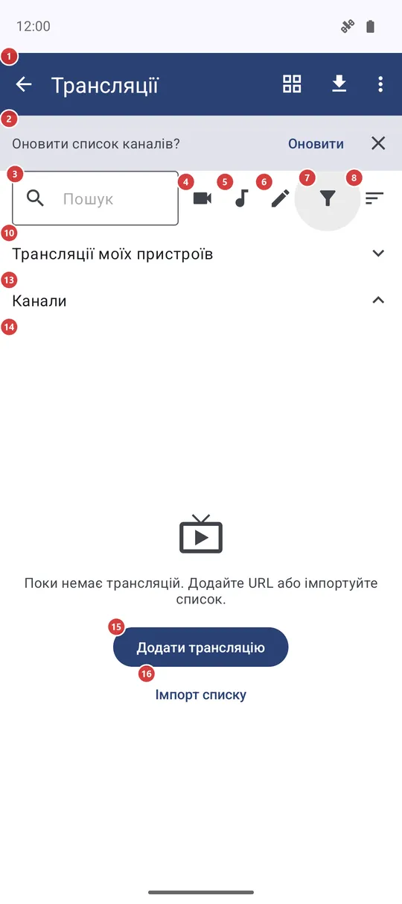
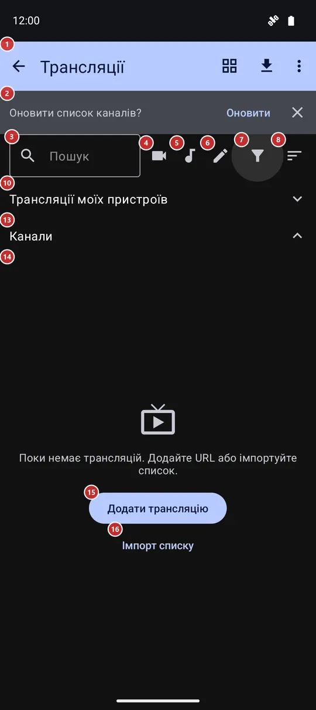

Трансляції
Для чого цей екран
«Трансляції» - ваш список інтернет-радіо, телеканалів і камер. Додайте трансляцію за адресою, завантажте вбудований каталог або готовий плейлист, знайдіть канал і запустіть: радіо грає просто на цьому екрані, відео відкривається в повноекранному плеєрі.


Порядок дій
- Відкрийте «Трансляції» з програм на головному екрані. Поки список порожній, «Додати трансляцію» 15 приймає адресу однієї станції чи каналу, а «Імпорт списку» 16 завантажує готовий список.
- Щоб наповнити список вбудованим каталогом, натисніть «Імпорт каталогу» 23 на панелі. Те саме оновлення може запропонувати банер 2 під час відкриття екрана.
- Знайдіть канал: введіть кілька літер у «Пошук» 3, натисніть кнопку відео, аудіо або власних трансляцій (4, 5, 6) чи відкрийте «Фільтр» 7 - добірка, категорія, рубрика, мова й країна. «Добірки» 9 - набори, складені вручну; вони видимі, якщо є в каталозі.
- «Сортування» 8 задає порядок, а кнопка вигляду 22 перемикає рядки й плитки.
- Натисніть канал у списку 14, щоб запустити. Радіо грає просто тут, унизу з’являється «Зупинити» 21; відео відкривається в повноекранному плеєрі.
- Натисніть канал і втримуйте, щоб закріпити. Закріплені збираються в «Закріплені» 12 над «Канали» 13; натискання на заголовок згортає розділ.
- Трансляції ваших інших пристроїв чекають у розділі 10. «Оновити стан каналів» 27 перевіряє, які канали відповідають, а «Довідка» 29 відкриває цю сторінку.
Елементи
Панель, пошук і фільтри
1ТрансляціїВерхня панель: повернення назад, перемикач вигляду, імпорт каталогу та меню з рештою команд.
Стрілка, як і системна кнопка «Назад», закриває екран. Якщо станція ще грає у фоні, застосунок може спершу спитати, зупинити її чи залишити грати, і запам’ятати вашу відповідь. Праворуч розташовані перемикач вигляду (сіткою чи списком), «Імпорт каталогу» та меню з трьома крапками; вони описані в групі «Кнопки й меню панелі». В альбомній орієнтації поле пошуку, кнопки відео, аудіо й власних трансляцій, «Фільтр» та «Сортування» переїжджають на цю панель, щоб списку вистачало висоти.
2Оновити список каналів?Пропонує оновити список каналів із вбудованого каталогу.
Банер з’являється вгорі, лише якщо в налаштуваннях, у розділі «Трансляції», пункт «Оновлення списку каналів» стоїть у положенні «Пропонувати під час відкриття», а останнє оновлення було понад шість годин тому або не було взагалі. «Оновити» завантажує каталог, кнопка закриття просто прибирає банер. Він не зникає сам, тож можна відповісти, коли вам зручно. Доки ви не натиснете «Оновити», нічого не завантажується.
3ПошукЗвужує список під час набору.
Введіть частину назви каналу, рубрики чи мови - рядки звузяться одразу; хрестик у кінці очищає поле. Текст не запам’ятовується, тож під час кожного відкриття екрана поле порожнє. Пошук працює разом із фільтрами нижче.
4Показувати лише відеоЗалишає лише відеоканали, плитками з попереднім переглядом.
Натисніть, щоб побачити відеоканали з каталогу та імпортованих списків; повторне натискання повертає все. Під час вибору список перемикається на плитки, щоб показати попередній перегляд, а після виходу з цього фільтра повертається попередній вигляд. Трансляції, додані вручну, тут не враховуються - вони під кнопкою власних трансляцій.
5Показувати лише аудіоЗалишає лише радіо та інші аудіоканали.
Натисніть, щоб побачити аудіоканали з каталогу та імпортованих списків; повторне натискання показує все. Трансляції, додані вручну, - під кнопкою власних трансляцій.
6Показувати лише трансляції, додані вручнуЗалишає лише трансляції, додані вами вручну.
Зручно, коли в каталозі тисячі каналів, а потрібні ваші кілька. Канали з імпортованого плейлиста власними не вважаються. Повторне натискання знімає фільтр.
7ФільтрВідкриває всі фільтри: тип, категорія, мова, рубрика, країна й лише закріплені.
Угорі вікна - «Усі», «Аудіо», «Відео» та «Власні», нижче «Категорія» і «Мова», «Рубрика» (лише якщо в каталозі є рубрики) та «Країна». Кожен рядок відкриває список із пошуком. «Лише закріплені» залишає тільки закріплені вами канали. Вибір застосовується одразу; «OK» закриває вікно, «Скинути фільтри» очищає все. Поки ввімкнено будь-який фільтр, значок змінюється, а ваш вибір запам’ятовується до наступного разу.
8СортуванняВибирає порядок каналів.
Варіанти: «За назвою», «За рубрикою», «За мовою», «За країною» та «Нещодавно додані»; порядок запам’ятовується. Закріплені канали йдуть у своєму розділі у вашому порядку, тому сортування змінює розділ «Канали». Якщо вибрано добірку, сортування замінює порядок укладача, але добірка лишається.
9ДобіркиНабори каналів, дібрані вручну, - обираються у фільтрі.
Рядок «Добірка» з’являється у фільтрі, лише коли каталог привіз добірки. Залиште «Усі», щоб бачити весь список; оберіть добірку, щоб побачити тільки цей набір у порядку, який обрали укладачі. Активна завжди одна добірка.
Списки каналів
10Трансляції моїх пристроївПрямі трансляції ваших інших пристроїв; розділ згорнуто, доки ви його не відкриєте.
Розділ видно, лише коли телефон увійшов на сервер обміну (див. «Мої пристрої»). Він починає згорнутим, а застосунок шукає трансляції, лише поки він відкритий, - так заощаджується трафік. Після розгортання спершу видно «Шукаємо трансляції..», потім список: назва, ім’я пристрою й режим - лише аудіо, лише камера або камера й аудіо. Натисніть трансляцію, щоб додати її до каналів; повідомлення скаже, чи її додано, оновлено, чи вона вже була, а запускати її ви будете зі списку «Канали». Трансляцію, яку ця версія не вміє відтворювати, позначено.
11Про трансляції та castВідкриває сторінку сайту проєкту про трансляції та cast.
Кнопка видима, лише поки розділ вище розгорнуто. Сторінка відкривається в браузері й пояснює, як прийняти трансляцію з іншого пристрою.
12ЗакріпленіЗакріплені канали - завжди вгорі.
Розділ з’являється, щойно закріплено хоча б один канал, і зникає, коли закріплених немає. Натисніть заголовок, щоб згорнути розділ і віддати все місце решті каналів; ще раз - щоб розгорнути. Згортання не запам’ятовується між запусками. У цьому розділі меню з трьома крапками біля каналу додатково пропонує «Вгору», «Вниз» і «На самий верх» - так ви задаєте власний порядок. Годинник показує першими ці самі канали, а «Закріплені трансляції годинника» у Wear-супутнику редагують саме цей набір.
13КаналиУсі канали, які не закріплено.
Тут каталог, імпортовані списки та додані вами трансляції. Поки є закріплені канали, натискання на заголовок згортає цей розділ і віддає весь екран закріпленим. Якщо закріплених немає, заголовок нічого не робить.
14Список каналівСамі канали: натисніть, щоб запустити, втримуйте, щоб закріпити.
У рядку - логотип чи прапор каналу, назва й адреса, маленькі позначки регіону, рубрики, країни та мови, а також позначка стану: порожнє кільце - ще не запускався, галочка - запускався звідси, знак оклику - остання спроба не вдалася. Натисніть рядок, щоб запустити. Радіо продовжує грати на цьому екрані з кнопкою «Зупинити» внизу; повторне натискання на рядок, що грає, теж зупиняє його. Відео відкривається в повноекранному плеєрі. Без мережі застосунок одразу про це каже, а не чекає. Якщо станція не відповідає, вікно пропонує «Повторити спробу» або «Видалити»; коли телефон не в мережі, лишається тільки «Повторити спробу».
Натисніть рядок і втримуйте або натисніть значок кнопки закріплення, щоб закріпити чи відкріпити канал. Три крапки біля рядка відкривають решту: «До обраного» (коли ввімкнено «Обране»), «На домашній екран», «Змінити» (для трансляцій, доданих вручну), «Надіслати на годинник» і «Відкрити на годиннику» (коли ввімкнено Wear-супутник), «Відкрити у VR» (для відеоканалів, якщо підключено шолом), «Інформація про канал», «Надіслати посилання» та «Видалити». У режимі плиток плитка робить те саме, зі значком закріплення, а «Закріпити» й «Відкріпити» лежать у меню. Правий клік миші відкриває те саме меню.
- Скасування
- «Видалити» спершу питає, потім прибирає канал зі списку. Скасування немає: канал із каталогу може повернутися з наступним оновленням каталогу, а введена вами трансляція зникає, доки ви не додасте її адресу знову.
15Додати трансляціюВідкриває вікно, де вводиться адреса трансляції.
Це повідомлення з двома кнопками з’являється, коли показувати нічого - під час першого запуску або якщо пошук і фільтри нічого не знайшли. «Додати трансляцію» відкриває те саме вікно, що й команда в меню панелі: адреса, необов’язкова назва та необов’язковий вибір мов.
16Імпорт спискуЗавантажує одразу цілий список каналів.
Застосунок спитає, як саме: «Імпорт каталогу» завантажує вбудований каталог, «Імпорт за URL» бере адресу плейлиста, який у вас уже є. Обидва варіанти є й на панелі.
Прокручування й відтворення
17На початок спискуПереходить до першого каналу.
Чотири круглі кнопки біля правого краю стосуються списку «Канали» й з’являються, лише коли він довший за екран. Ця кнопка видна, коли ви відійшли від початку списку.
18Сторінка вгоруПрокручує список на сторінку вгору.
З’являється разом із «На початок списку», коли ви не на початку списку.
19Сторінка внизПрокручує список на сторінку вниз.
Видна, поки нижче є ще канали, і зникає наприкінці списку.
20В кінець спискуПереходить до останнього каналу.
Корисно в довгому каталозі, коли потрібний канал за такого сортування опиняється в кінці. Зникає, коли ви вже внизу.
21ЗупинитиЗупиняє радіо, що грає на цьому екрані.
Тонка смуга внизу з’являється, поки тут грає станція. У ній назва станції та, якщо станція її передає, назва пісні. «Зупинити» припиняє відтворення; те саме робить натискання на рядок, що грає. Якщо в налаштуваннях увімкнено відтворення у фоні, станція може грати й після виходу з екрана.
Кнопки й меню панелі
22Сіткою / СпискомПеремикає списки між рядками та плитками.
Кнопка показує вигляд, який увімкнеться наступним: значок сітки, поки на екрані рядки, і значок списку, поки плитки. Плитки показують картинку кожного каналу - живий кадр, попередній перегляд чи логотип - і зручні для перегляду відео; рядки лишають більше місця для тексту. Закріплений і основний розділи перемикаються разом, а вибір запам’ятовується. У режимі плиток рух пальця вниз по списку оновлює картинки видимих плиток.
23Імпорт каталогуЗавантажує вбудований каталог каналів і додає його до списку.
Потрібна мережа. Коли завантаження закінчиться, повідомлення скаже, скільки каналів додано, оновлено й вилучено. Одразу після оновлення застосунок може запропонувати завантажити картинки каналів і логотипи станцій; це окремі додаткові завантаження, від кожного можна відмовитися. Трансляції, які ви додали чи імпортували самі, каталог не змінює.
Вікно додавання трансляції
30URL трансляції (http, https, rtsp)Адреса трансляції, яку ви додаєте.
Введіть або вставте адресу, що починається з http, https або rtsp, - радіостанція, телеканал, камера. Аудіо чи відео застосунок визначає за адресою; пізніше це можна змінити у вікні «Змінити» біля каналу. У режимі «Імпорт списку» те саме поле приймає адресу плейлиста, а заголовок вікна підказує, де ви перебуваєте. «OK» додає, «Скасувати» закриває вікно без збереження.
31Назва (необовʼязково)Назва каналу.
Показується у списку замість адреси. Якщо залишити поле порожнім, береться ім’я сайту з адреси. Це поле є лише у вікнах додавання та зміни - імпортований плейлист приносить власні назви.
32Мова аудіоМова звуку, з якої канал почне грати.
«За замовчуванням» слідує загальним налаштуванням трансляцій, а «Англійська», «Російська» чи «Українська» діють лише для цього каналу. Це важливо для каналів із кількома звуковими доріжками. Рядок є під час додавання одного каналу, але не під час імпорту списку.
33Мова субтитрівМова субтитрів для цього каналу.
«За замовчуванням» слідує загальним налаштуванням трансляцій, або оберіть «Англійська», «Російська» чи «Українська» лише для цього каналу. Працює разом із рядком «Субтитри» нижче.
34СубтитриВмикає або вимикає субтитри для цього каналу.
«За замовчуванням» слідує загальним налаштуванням, «Увімкнені» показують субтитри, якщо вони є в каналу, «Вимк» ховає їх. Вибір прив’язано до адреси каналу, і він зберігається, коли ви його змінюєте.
Вікно «Зберегти локальну копію»
35Зберегти локальну копію?Вікно в плеєрі, яке пропонує завантажити файл замість відтворення мережею.
Плеєр показує його, коли вирішує, що файл із мережевої папки чи хмари за поточної швидкості не гратиме плавно. У вікні вказано розмір файлу, швидкість з’єднання та швидкість, потрібну файлу, приблизний час завантаження, вільне місце на телефоні й куди ляже копія. Якщо місця не вистачає, з’являється попередження, а «Зберегти локальну копію» вимикається. Вікно стосується файлів мережевих ресурсів і хмари, а не живих інтернет-каналів.
36Зберегти локальну копіюЗавантажує файл на телефон і відтворює звідти.
Вікно з ходом завантаження дає змогу її скасувати. Коли завантаження закінчиться, відтворення продовжиться з локальної копії, і мережа вже не потрібна. Кнопку вимкнено, якщо на телефоні немає місця під файл і запас у десяту частину. Під час виходу з плеєра вас можуть спитати, залишити копію чи видалити, якщо це ще не вирішено налаштуванням кешу трансляцій.
- Скасування
- Якщо скасувати завантаження, неповний файл видаляється. Оригінал на сервері чи в хмарі не змінюється ніколи, а локальну копію можна видалити, коли плеєр спитає.
- Сполучення клавіш
- Enter
37Спробувати все одноЗалишає відтворення мережею як було.
Закриває вікно й далі грає мережею. Поки з’єднання повільне, можливі паузи. Нічого не завантажується й не змінюється.
38СкасуватиВідхиляє пропозицію.
Закриває вікно й продовжує відтворення мережею - так само, як «Спробувати все одно». Те саме робить системний жест «Назад» або дотик поза вікном.